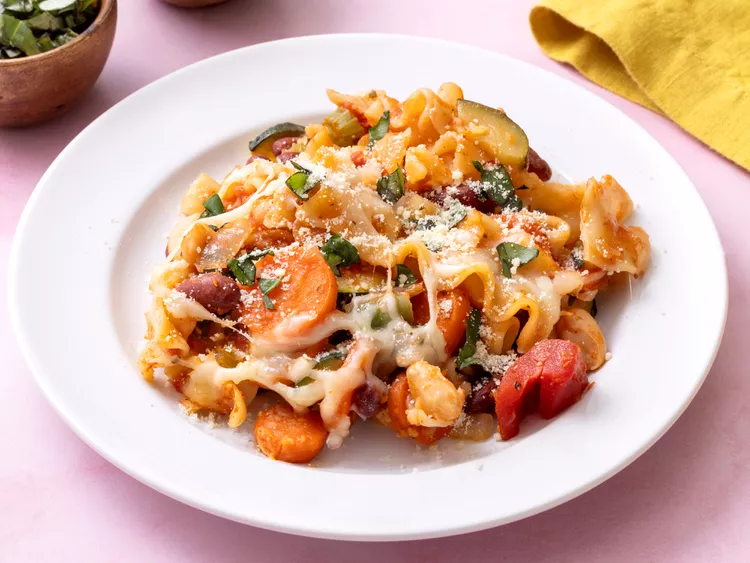

Minestrone Casserole
Home

Description:
This minestrone casserole, with fresh vegetables, canned beans, and pasta in a tomato sauce, topped with mozzarella and Parmesan cheeses, is a delicious new twist on minestrone soup.
Ingredients:
- 4 cups dried mafalda pasta (mini lasagna noodles)
- 2 tablespoons olive oil
- 2 carrots, sliced
- 2 stalks celery, sliced
- 1 onion, chopped
- 1 zucchini, quartered lengthwise and sliced
- 2 cloves garlic, minced
- 1 (15-ounce) can red kidney beans
- 1 (15-ounce) can cannellini beans
- 1 (15-ounce) can diced tomatoes with Italian herbs
- 1 (15-ounce) can tomato sauce
- 1 cup frozen cut green beans
- 1/2 cup grated Parmesan cheese, divided
- 1 teaspoon Italian seasoning
- 1/2 teaspoon salt
- 1/4 teaspoon freshly ground black pepper
- 1 cup shredded mozzarella cheese
- chopped fresh basil and/or oregano